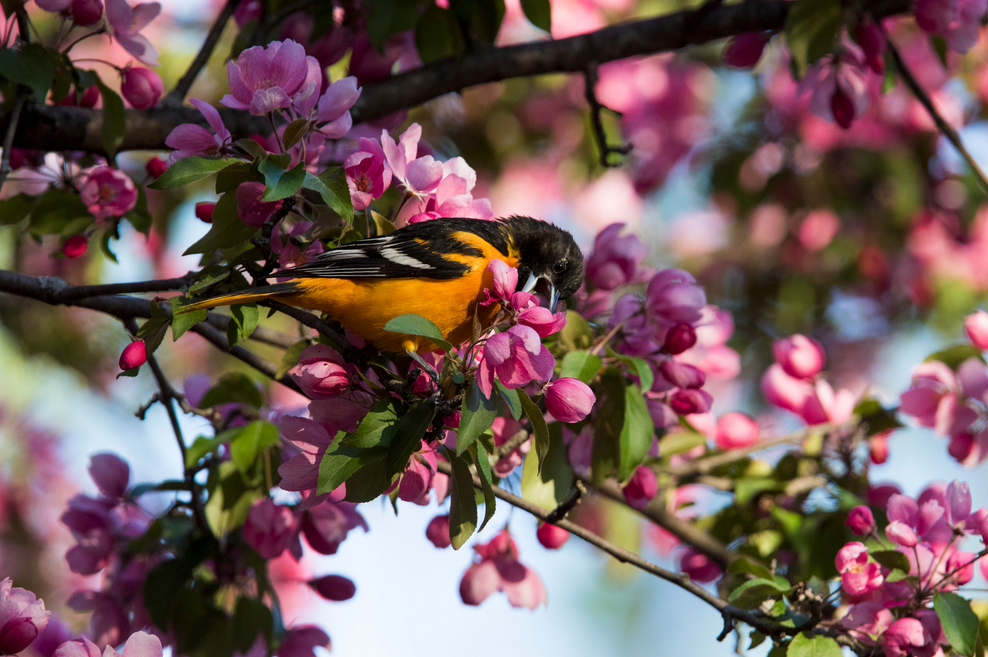
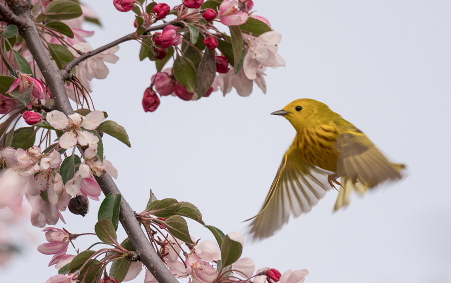

.png) POLINIZADORES Y SU IMPORTANCIA EN LA NATURALEZA
POLINIZADORES Y SU IMPORTANCIA EN LA NATURALEZA
La transferencia de polen puede llevarse a cabo mediante el viento, o el agua, pero en la gran mayoría de las plantas se lleva a cabo a través de animales polinizadores. Al alimentarse, accidentalmente quedan impregnados de polen que transportan a las siguientes flores que visitan. Es así que la polinización resulta benéfica para ambos organismos.
Aves
Colibrí
Son los únicos polinizadores con distribución exclusiva en el hemisferio occidental, polinizado a más de 1,000 especies de plantas. Su tamaño, pico delgado, colores y comportamiento están asociados a su dependencia al néctar. En México se han identificado 57 especies de colibríes endémicas.(Fuente imagen:mirceax vía Canva)
Calandrias

Las calandrias (Icterus galbula) no son polinizadores directos, pero pueden contribuir indirectamente a la polinización. Aunque su dieta principal consiste en insectos, su interacción con las flores, al buscar alimento, puede dispersar el polen y facilitar la polinización de algunas especies.Mientras buscan insectos en las flores, las calandrias pueden tocar el estigma y el estambre de las flores, transfiriendo así el polen de una flor a otra. Al alimentarse de frutos con semillas, las calandrias también pueden dispersar las semillas a través de sus heces, lo que contribuye a la reproducción de las plantas.(Fuente imagen:mirceax vía Canva)
Reinitas amarillas

Las reinitas amarillas (Setophaga petechia) son aves pequeñas que se alimentan principalmente de insectos, incluyendo orugas, cachipollas y polillas. Aunque su dieta principal son los insectos, las reinitas también pueden consumir algunas bayas y pequeños frutos, especialmente durante el invierno. Las reinitas, al forrajear insectos en las flores, pueden accidentalmente transferir polen de una flor a otra, contribuyendo a la polinización. Las reinitas amarillas son aves migratorias que se encuentran en diversas regiones, desde Norteamérica hasta Sudamérica.(Fuente imagen:mirceax vía Canva)
Más información »